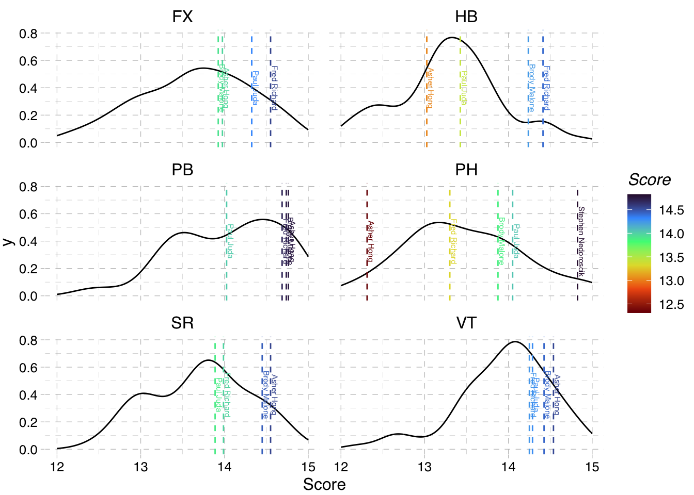

library(tidyverse)
# read all results across usa champs and olympic trials
nc1_df <- read_csv("./natnls-d1.csv")
nc2_df <- read_csv("./natnls-d2.csv")
ot1_df <- read_csv("./trials-day1.csv")
ot2_df <- read_csv("./trials-day2.csv")
# merge all results into one dataframe
results_df <- bind_rows(list(nc1_df, nc2_df, ot1_df, ot2_df))2024 US Men’s Gymnastics Olympic Team Selection
TODO
- Calculate what the other top team compositions were
Data
I copied the data from https://myusagym.com and manually cleaned it up into .csv format.
To visualize the data overall, I grouped scores by event from all USA Championships and Olympic Trials routines and plotted the spread of observed scores.
library(ggthemes)
eventsdist <- results_df %>% select(!AA) %>%
pivot_longer(
cols = c(FX, PH, SR, VT, PB, HB),
names_to = "Event",
values_to = "Score",
) %>% filter(Score > 1) %>%
ggplot(aes(x=Score)) +
geom_density() +
xlim(11, 16) +
facet_wrap(~Event, ncol = 2) +
theme_pander()
eventsdistWarning: Removed 9 rows containing non-finite outside the scale range
(`stat_density()`).Not surprisingly, out of all six event Pommel has the largest variance in scores and the lowest average. P-Bars and Vault are high-scoring events on average but Vault (at least for these competitions) is more consistently grouped around 14 while the P-Bars distribution seem to have a large right tail with a lot of potential for 15+ scores.
Averages across usa championships and olympic trials
# average individual gymnasts' scores across four days
indv.averages_df <- results_df %>%
filter(NAME %in% ot1_df$NAME) %>% # who qualified to olympic trials
group_by(NAME) %>%
summarise_at(vars(FX:AA), mean, na.rm=TRUE) %>%
arrange(desc(AA))
indv.averages_df| NAME | FX | PH | SR | VT | PB | HB | AA |
|---|---|---|---|---|---|---|---|
| Brody Malone | 13.9250 | 13.87500 | 14.4500 | 14.42500 | 14.73750 | 14.2375 | 85.6500 |
| Fred Richard | 14.5500 | 13.30000 | 13.9875 | 14.25000 | 14.68750 | 14.4125 | 85.1875 |
| Shane Wiskus | 14.3875 | 13.63750 | 13.8375 | 14.37500 | 14.61250 | 13.6125 | 84.4625 |
| Paul Juda | 14.3250 | 14.05000 | 13.8875 | 14.28750 | 14.02500 | 13.4250 | 84.0000 |
| Yul Moldauer | 14.3000 | 13.06250 | 13.9375 | 13.95000 | 15.01250 | 13.1125 | 83.3750 |
| Donnell Whittenburg | 14.1750 | 12.88750 | 14.4250 | 14.41250 | 14.30000 | 12.9750 | 83.1750 |
| Asher Hong | 13.9750 | 12.31250 | 14.5500 | 14.53750 | 14.76250 | 13.0250 | 83.1625 |
| Cameron Bock | 13.7375 | 13.97500 | 13.7750 | 13.75000 | 14.22500 | 13.6500 | 83.1125 |
| Fuzzy Benas | 13.9875 | 13.70000 | 13.5375 | 13.86250 | 14.07500 | 13.4625 | 82.6250 |
| Colt Walker | 13.5625 | 13.66250 | 13.7375 | 14.06250 | 14.86250 | 12.6125 | 82.5000 |
| Jeremy Bischoff | 13.6875 | 13.21250 | 13.3375 | 13.83750 | 13.77500 | 13.2375 | 81.0875 |
| Khoi Young | 14.0875 | 13.37500 | 9.9500 | 14.92500 | 14.68750 | 13.1625 | 80.1875 |
| Joshua Karnes | 12.9750 | 12.93750 | 13.2250 | 12.20000 | 14.46250 | 13.1500 | 78.7250 |
| Kiran Mandava | 13.0500 | 12.40000 | 12.8750 | 13.72500 | 13.47500 | 12.7000 | 78.2250 |
| Kai Uemura | 12.9625 | 11.57500 | 12.9125 | 13.30000 | 13.25000 | 12.8125 | 76.8125 |
| Tate Costa | 12.6125 | 10.98755 | 11.9375 | 13.52500 | 12.80000 | 12.5500 | 74.4125 |
| Alex Diab | NaN | NaN | 14.6250 | NaN | NaN | NaN | NaN |
| Curran Phillips | 13.0000 | NaN | NaN | 13.66667 | 15.58333 | 13.2000 | NaN |
| Patrick Hoopes | NaN | 14.67500 | NaN | NaN | NaN | NaN | NaN |
| Stephen Nedoroscik | NaN | 14.82500 | NaN | NaN | NaN | NaN | NaN |
Predicting a Team’s performance
# function to pick top three scores on each event from a team
team_top_scores <- function(names, scores = indv.averages_df, perevent = 3) {
scores %>%
filter(NAME %in% names) %>%
select(-AA) %>%
pivot_longer(
-NAME,
names_to = "Event",
values_to = "Score",
) %>%
# take top 3 on each event dropping extra tied scores
group_by(Event) %>%
slice_max(n = perevent, order_by = Score, with_ties = FALSE) %>%
mutate(
teamscore = sum(Score),
# names = c(unique(NAME))
) %>%
group_by(Event) %>%
summarise(
Score = first(teamscore),
OnEvent = list((NAME))
) %>% ungroup()
}
# function to take output of select_top_scores and calculate total
team_total <- function(top_scores) {
top_scores %>%
summarise(x=sum(Score)) %>%
pull()
}This method assumes that scores earned at the USA Championships and Olympic Trials are accurate predictions of scores earned at the actual Olympics. These will be over-estimates of a potential team’s Olympic performance if the domestic judging is less strict than the Olympic Committee judges panels.
My code also implicitly uses a 5-up, 3-count scoring system which is different from the actual 3-up, 3-count rule during Olympic team finals. While the US might choose the lineup in this way, they will also probably have to take into account the health of their athletes (e.g., resting Brody’s leg by not having him vault).
Team USA’s expected performance
Event scores breakdown
team_names <- c("Brody Malone", "Fred Richard", "Asher Hong", "Paul Juda",
"Stephen Nedoroscik")
actual_team <- team_top_scores(team_names)
actual_team_tot <- actual_team %>%
team_total()
actual_team| Event | Score | OnEvent |
|---|---|---|
| FX | 42.8500 | Fred Richard, Paul Juda , Asher Hong |
| HB | 42.0750 | Fred Richard, Brody Malone, Paul Juda |
| PB | 44.1875 | Asher Hong , Brody Malone, Fred Richard |
| PH | 42.7500 | Stephen Nedoroscik, Paul Juda , Brody Malone |
| SR | 42.9875 | Asher Hong , Brody Malone, Fred Richard |
| VT | 43.2500 | Asher Hong , Brody Malone, Paul Juda |
Interpreting the team’s average scores
The expected team score for this team 1 is 258.1. For some context, the gold medal Japanese team at 2023 world championships 2 scored 255.594 and USA won bronze at the same competition with 252.428.
On paper this teams strengths relative to international competition seem to be Floor, Pommel, and High Bar with scores of 42.85, 42.75, and 42.075, respectively. However, the US is pretty infamous for not being able to pull together their full potential on Pommel.
This team also remains competitive on Rings with an average score of 42.9875 and on P-Bars with a 44.1875. With China being so dominant on those two events they probably won’t win any event final medals there but having those two events as strengths will definitely help the team score against Japan and Great Britain.
It’s kind of surprising that the main weakness on paper of this team is vault. With Brody, Paul, and Asher vaulting at a total predicted score of 43.25, they fall behind both China’s and Great Britain’s scores as well as the previous US team’s own score on the event from last year. I heard that judging on Asher’s Ri Se Gwang vault seemed overly harsh, so it’s possible that this team vault score gets better, but I think he’s the only one with a D-score higher than 5.6 on this event.
Potential vs Expectations
There will also be more psychological strain on these athletes which comes with the media attention and unfamiliar setting in Paris. This could be a factor that could potentially affect this team more than other alternative US teams.
I was hoping that Yul Muldauer could provide the same kind of leadership he showed at the World Championships to a younger and less-internationally experienced team. Unfortunately he didn’t perform up to his usual level of execution and consistency in these past few competitions so I understand why he was left off. These five guys (with maybe the exception of Paul?) have experience competing at the World/Olympic level, but I think Yul is one of those guys who gets along with everyone and feels comfortable in the spotlight. I think Fred has a very similar enthusiasm and drive, but this is still only his second year of competing at the senior international level.
The first night of the Olympic Trials made me pretty nervous about the ability for US gymnasts to stay consistent with increased attention on them. It was great to see how full the stadium in Minneapolis was for men’s gymnastics, but I also thought that some of the extra shakiness on Pommel and throughout the night might have been attributable to all the extra energy around. This team has a lot of potential and I just hope that they don’t get overwhelmed by the pressure of thinking that they need to live up to the high expectations of a domestic audience who only tune in every four years with the anticipation that anything team USA touches at the Olympics could turn to gold.
Comparing to the rest of the field
team_scores <- indv.averages_df %>%
filter(NAME %in% team_names) %>%
select(-AA) %>%
pivot_longer(
-NAME,
names_to = "Event",
values_to = "Score",
)
eventsdist +
geom_vline(
data = team_scores,
aes(
xintercept = Score,
color = Score,
),
linetype = "dashed"
) +
geom_text(
data = team_scores,
aes(
y = 0.4,
x = Score,
label = NAME,
color = Score
),
angle = 270,
size = 2,
nudge_x = 0.05,
) +
scale_color_viridis_c(option = "turbo", direction = -1) +
xlim(12, 15)

Other hypothetical compositions
Picking only the top all-arounders
# If they had taken top five all arounders
alt_team1_names <- indv.averages_df %>%
slice_head(n=5) %>%
select(NAME) %>%
pull()
alt_team1 <- team_top_scores(alt_team1_names)
alt_team1| Event | Score | OnEvent |
|---|---|---|
| FX | 43.2625 | Fred Richard, Shane Wiskus, Paul Juda |
| HB | 42.2625 | Fred Richard, Brody Malone, Shane Wiskus |
| PB | 44.4375 | Yul Moldauer, Brody Malone, Fred Richard |
| PH | 41.5625 | Paul Juda , Brody Malone, Shane Wiskus |
| SR | 42.3750 | Brody Malone, Fred Richard, Yul Moldauer |
| VT | 43.0875 | Brody Malone, Shane Wiskus, Paul Juda |
This team has an expected score of 256.9875 which is 1.1 points behind the selected team’s expected score, so it makes sense they didn’t go with this team. Paul and Shane are both similar in that their main strengths are contributing solid performances on any event but neither have any standout routines with enough difficulty to put them in event finals. It makes sense to have one gymnast fill this roll on a team, but I don’t think it makes sense to leave behind world-class routines like Stephen’s pommel horse or Asher’s, Khoi’s, or Donnell’s vaults to gain the additional safe scores from sending both Paul and Shane together.
It was really cool to see how hyped the Minneapolis crowd was to see shane compete in his hometown and he did a great job over the two nights there, but ultimately Paul just put on a more consistent performance during US Championships. And that’s what this type of role on team USA is all about; just proving that you will put up a decent score every time you go up.
My team picks
# My own personal picks
my_team_names <- c("Fred Richard", "Brody Malone", "Yul Moldauer", "Shane Wiskus", "Khoi Young")
alt_team2 <- team_top_scores(my_team_names)
alt_team2| Event | Score | OnEvent |
|---|---|---|
| FX | 43.2375 | Fred Richard, Shane Wiskus, Yul Moldauer |
| HB | 42.2625 | Fred Richard, Brody Malone, Shane Wiskus |
| PB | 44.4375 | Yul Moldauer, Brody Malone, Fred Richard |
| PH | 40.8875 | Brody Malone, Shane Wiskus, Khoi Young |
| SR | 42.3750 | Brody Malone, Fred Richard, Yul Moldauer |
| VT | 43.7250 | Khoi Young , Brody Malone, Shane Wiskus |
This team also falls short by 1.2 points and looking at the event breakdowns, it really seems like pommel horse is the deciding factor. I would have put Shane on the team ahead of Paul based on his experience, but now I see how much of an impact Paul’s 14 pommel average had on him making the team.
Without sending a pommel horse specialist to Paris, the best possible team score they could put up on this event would be 41.9. So Stephen is contributing at least an extra 0.85 points to the team score and likely more considering that he’s making sure Fred’s 13.3 PH average won’t have to be counted. If Khoi had hit his pommel routines consistently then he would have seemed like a much more obvious replacement for Stephen because he has the potential to put up a 15.0 like he showed in night 2 of US Championships. He would also make the team’s vault score a lot more competitive where his average score of 14.925 is actually 4 tenths higher than Asher’s and seems to be a lot more consistent.
Other potential teams
names <- indv.averages_df %>% select(NAME) %>% pull()
# all combinations of gymnasts choosing five at a time
teams_possible <- combinat::combn(names, 5, simplify = T) %>%
as_tibble() %>%
pivot_longer(
cols = everything(),
names_to = "team",
values_to = "name") %>%
group_by(team) %>%
summarise(
names = list(name)
)
# function to apply team_total to list of names
team_top_total <- function(x) team_total(team_top_scores(unlist(x)))
# record top scores for every possible team combination
teamsim_df <- teams_possible %>%
mutate(
total = as.numeric(map(names, team_top_total)),
# names = map(names, toString)
) %>%
arrange(desc(total))
# save sim results to file
save(teamsim_df, file = "teamsim.RData")load("./teamsim.RData")
teamsim_df %>%
select(-team) %>%
filter(!("Patrick Hoopes" %in% names)) %>%
head(n=20)| names | total |
|---|---|
| Brody Malone , Fred Richard , Paul Juda , Asher Hong , Stephen Nedoroscik | 258.1000 |
| Brody Malone , Fred Richard , Shane Wiskus , Asher Hong , Stephen Nedoroscik | 258.0250 |
| Brody Malone , Fred Richard , Paul Juda , Asher Hong , Patrick Hoopes | 257.9500 |
| Brody Malone , Fred Richard , Paul Juda , Curran Phillips , Stephen Nedoroscik | 257.9208 |
| Brody Malone , Fred Richard , Asher Hong , Patrick Hoopes , Stephen Nedoroscik | 257.8875 |
| Brody Malone , Fred Richard , Shane Wiskus , Asher Hong , Patrick Hoopes | 257.8750 |
| Brody Malone , Fred Richard , Shane Wiskus , Patrick Hoopes , Stephen Nedoroscik | 257.8625 |
| Brody Malone , Fred Richard , Paul Juda , Khoi Young , Stephen Nedoroscik | 257.8625 |
| Brody Malone , Fred Richard , Shane Wiskus , Donnell Whittenburg, Stephen Nedoroscik | 257.8250 |
| Brody Malone , Fred Richard , Asher Hong , Cameron Bock , Stephen Nedoroscik | 257.8125 |
| Brody Malone , Fred Richard , Shane Wiskus , Curran Phillips , Stephen Nedoroscik | 257.7958 |
| Brody Malone , Fred Richard , Paul Juda , Yul Moldauer , Stephen Nedoroscik | 257.7750 |
| Brody Malone , Fred Richard , Paul Juda , Curran Phillips, Patrick Hoopes | 257.7708 |
| Brody Malone , Fred Richard , Shane Wiskus , Khoi Young , Stephen Nedoroscik | 257.7375 |
| Brody Malone , Fred Richard , Shane Wiskus , Paul Juda , Stephen Nedoroscik | 257.7250 |
| Brody Malone , Fred Richard , Paul Juda , Khoi Young , Patrick Hoopes | 257.7125 |
| Brody Malone , Fred Richard , Shane Wiskus , Yul Moldauer , Stephen Nedoroscik | 257.7000 |
| Brody Malone , Fred Richard , Shane Wiskus , Donnell Whittenburg, Patrick Hoopes | 257.6750 |
| Brody Malone , Fred Richard , Asher Hong , Cameron Bock , Patrick Hoopes | 257.6625 |
| Brody Malone , Fred Richard , Shane Wiskus , Curran Phillips, Patrick Hoopes | 257.6458 |
It’s not surprising that Brody and Fred show up on all of these teams. Asher is also pretty dominant in this ranking, which seems to be coming from his higher performances on rings and p-bars compared to Donnell and being close enough to Khoi on vault and floor.
However, I didn’t expect that all of these top 20 teams would have at least one pommel specialist. A lot of these teams are just variations of the same teams except swapping Stephen and Patrick Hoopes (and one team with both of them).
This also highlights how close Shane came to being on the team (by just .75)! But it also how similar his contributions are to Paul’s which sort of put him in the same unfortunate position as Patrick Hoopes who’s status as a pommel specialist means that he can only really be swapped out with Stephen.
Footnotes
with domestic judging↩︎
according to the wikipedia page↩︎